gengyuanmax.github.io · docs/pipeline.html
印刷管线：从原稿到网页
2026-10-16：所有在用配方的实际着墨计算已收敛到 transferPlate。加网只准备网版，转印按配方产生墨量和边缘损失，扩墨全局关闭。文字、圆点、线网保留各自参数与表达；原色插页明确不重复印刷。
网站上每一个非文字元素和每一个大字标题，都经过同一台“模拟 Riso 印刷机”：先把原稿分成墨量，再加网、转印、叠印，最后由浏览器挂到真实的页面上。本页用真实管线渲染的中间结果说明每一步。图像由 scripts/render-pipeline-doc.mjs 生成，管线改动后重新运行即可更新。
1. 总览
八个阶段。前六个是纯计算（src/design/print-pipeline/，可在 Node、浏览器主线程或 Web Worker 里运行，结果相同）；后两个负责把结果交给页面。
2. 每种元素走哪条路
同一台印刷机，不同原稿只是入口和出口不同。“—”表示这一步不做（例如文字不加网，只做转印）。
| 元素 | 原稿 | 分色 / 影调 | 加网 | 转印 / 叠印 | 发布 → 网页 | 何时 |
|---|---|---|---|---|---|---|
| 首页人像 + 圆 | 抠图照片 + 圆形几何 | preparePortraitOriginals：照片按百分位色阶；圆用球面影调 | fine 2px，两块版 | 朱红 + 蓝叠印，纸面坐标转印 | 构建 PNG 作首帧；运行时 canvas 重印 | 构建主线程 |
| About 拱门照片 | src/assets/about/ 原图 | separateSubject（亮度 + 暖色键），反向挖空 | coarse 8px（display 档） | 单蓝版 | public/images/about-arch.png → <img>，multiply 到纸上 | 构建 |
| 章节色带 / 项目底色 | 矩形 | makeToneField 平面影调 | fine 2px | 单版转印 | alpha 遮罩 PNG → CSS mask-image；首帧先用平均墨量平涂 | Worker |
| 几何插图（Mosaic、AViLA 等） | SVG 形状 | svgCoverage → 平面 / 球面影调 | medium 4px | 两墨叠印 + 套准 | canvas 像素；印好前保持纸色 | 取样Worker |
| 标题文字（≥24px） | 真实 DOM 字形 | — | —（实色） | printText：同一转印，≤15%/12% 减墨 | alpha 遮罩挂在每块墨层上；字形轮廓始终是 DOM | Worker |
| 姓名网点 | DOM 字形 | — | coarse 1/16em，nameDots 带点径/点位噪声 | 蓝版对红字 ≤1.25px 套准 | 首帧 CSS 网点图 --dot-plate，由字形裁切 | CSS |
| 首页研究圆 | 程序生成的三个圆 | polygon 源（形状 + 焦点） | polygon-v1 不规则网点 | 黄、朱红、蓝三版，页面版偏移 | canvas，multiply；构建 PNG 只给无 JS | 主线程 |
| 引导线、边框、色条 | 测量到的 CSS 盒子 | — | — | printRule（rule-v1）：转印 + ≤.35px 边缘起伏 | 小 canvas（线）或遮罩（伪元素、色块） | 主线程 |
| Print Labs 样张 | 原色图片 | —（insert 配方，保留原色） | — | — | <img> 叠放（insert-stack.ts） | 静态 |
3. 逐步看：照片（About 拱门）
单墨照片最能看清每一步。黑色 = 墨，白色 = 纸。
src/assets/，不发布。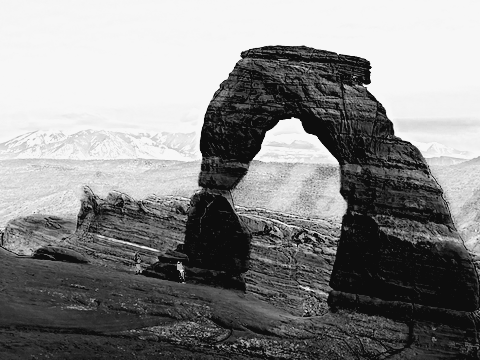
separateSubject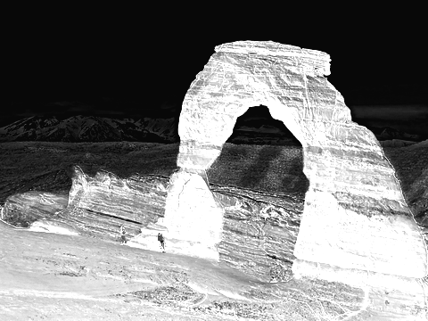
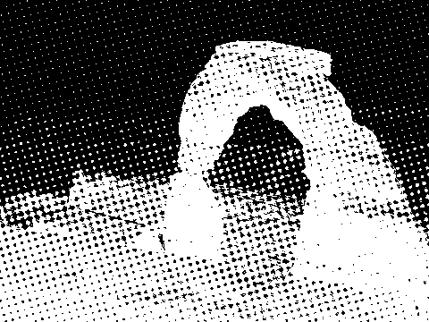
screenSheet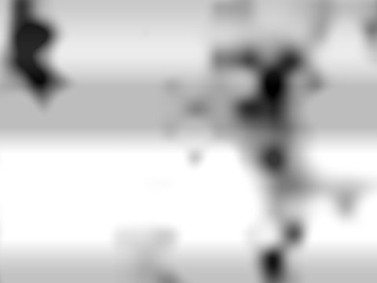
sheetInk · sheetRoller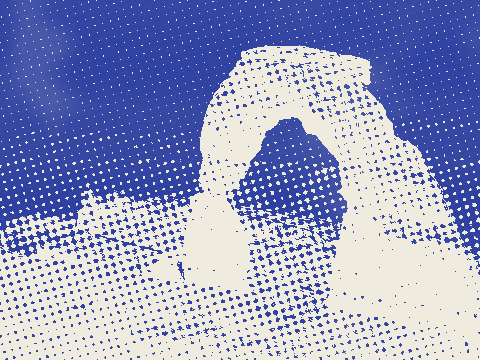
paintMaterial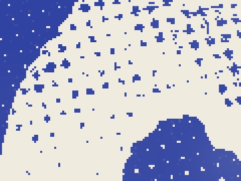
4. 色带、文字、研究圆、线条
章节色带 · fine 2px 网点
makeToneField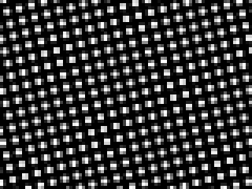
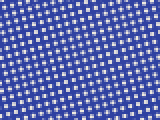
标题文字 · 只做转印
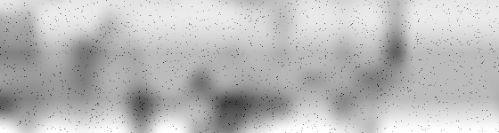
printText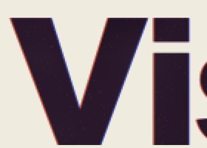
首页研究圆 · polygon-v1
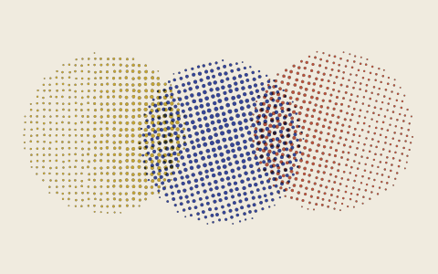
screenPolygons引导线与边框 · rule-v1
printRule · print-rules.ts5. 打开页面之后发生什么
- 解析 HTML 时内联脚本按网址选好分区、阅读模式（Poster / Compact），写入根节点。首帧就是最终分区，没有先显示别的再切换。Base.astro
- 首帧（约 0.2–0.4 秒）文字、版式、姓名网点（CSS 网点图）、色带的平均墨量平涂、纸纹都已经是最终样子；构建时印好的人像与拱门图片直接显示。需要 JS 印刷的插图在印好前保持纸色。CSS
- 字体就绪一次性读出所有元素的尺寸、字体和纸面坐标（先读后写，避免反复重排）。print-material.ts
- 派发任务纯计算交给 Worker 池，按优先级排队：插图 → 色带 → 文字纹理。主线程保持可点击、可滚动。print-jobs.ts · print-worker.ts
- 逐个挂上Worker 返回 PNG 遮罩或像素，主线程挂到对应元素（
mask-image/ canvas）。同一个元素只用最新一次的结果（createPrintMount）。主线程 - 同时印刷线条：测量所有 CSS 边框和色条，印到线条层；阅读树按层级粗细重画；研究圆和人像在主线程重印。print-rules.ts · reading-flow.ts
- 空闲时预先印好看不见的分区，切过去时已经印好。Worker
- 之后改变窗口大小、切换模式、展开内容时只重印变化的部分（结果按内容缓存）。
6. 全局约束（为什么整页像一张纸）
一张纸
所有噪声都在纸面坐标上取样（onSheet）：同一个位置永远是同样的纸纹、缺墨、滚筒条纹，元素换位置、换尺寸都不会让纹理“跟着走”。滚筒周长固定为 1440 CSS px。
一台印刷机
一张版列表（plates.ts）：朱红 a 是参考版，蓝 b 和黄 c 按全局套准偏移。所有元素用同样的网角、点形和套准。
三档网距
fine 2px（色带、人像、细网）· medium 4px（几何插图）· coarse 1/16em（大字与姓名、About 照片）。不允许第四档（screen.ts）。
噪声预算
每种噪声都有上限（budget.ts）：加网前的墨量起伏 ±.08 且 ≥80px；转印缺墨 ≤.15、颗粒 ≤.12、滚筒 ≤.05；文字总减墨 ≤.15 / .12。超出就是故障，不是质感。
完整规则见 docs/DESIGN_CONSTRAINTS.md（尤其第 4、16–27 节）；新增印刷元素见 docs/ADDING_A_PRINT_ELEMENT.md。
7. 文件地图
print-pipeline/index.ts 公共入口 · definePrintElementsources.ts · subject.ts 分色tone.ts 影调 · screen.ts 网距sheet.ts 加网 · sheet-context.ts 纸面场transfer.ts 统一转印 · registration.ts 套准raster-composite.ts 栅格合成 · material.ts 版参数text.ts 文字 · polygon.ts 研究圆 · rule.ts 线条plates.ts · budget.ts · noise.ts · png.ts · jobs.tsclient/print-material.ts 文字、色带、插图调度client/print-jobs.ts · print-worker.ts Worker 池client/print-rules.ts · print-guides.ts 线条client/reading-flow.ts 阅读树client/portrait-composition.ts 人像 · research-map.ts 研究圆print-pipeline/browser.ts canvas / 遮罩工具scripts/render-media.mjs 总入口render-portrait-composition.mjs 人像render-about-photo.mjs 拱门scripts/render-pipeline-doc.mjs 本页图像print-pipeline/first-frame.ts 姓名网点图、色带平涂墨量styles/print-material.css 纸纹、遮罩、线条层styles/duotone-type.css 两墨文字、套准styles/reading-modes.css Poster / Compact